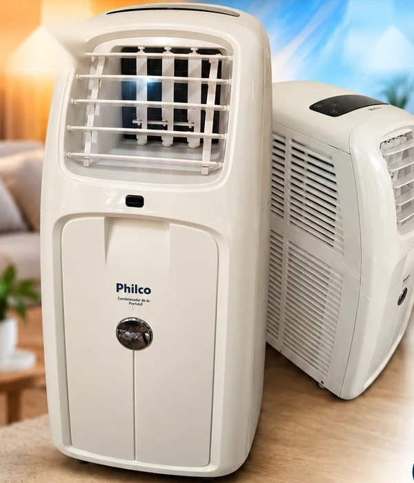
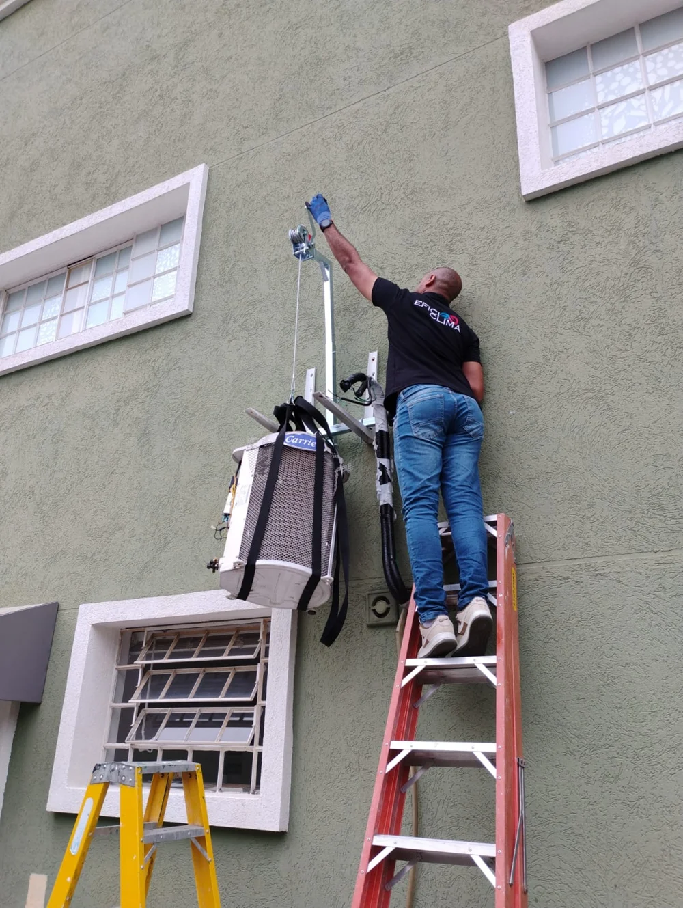
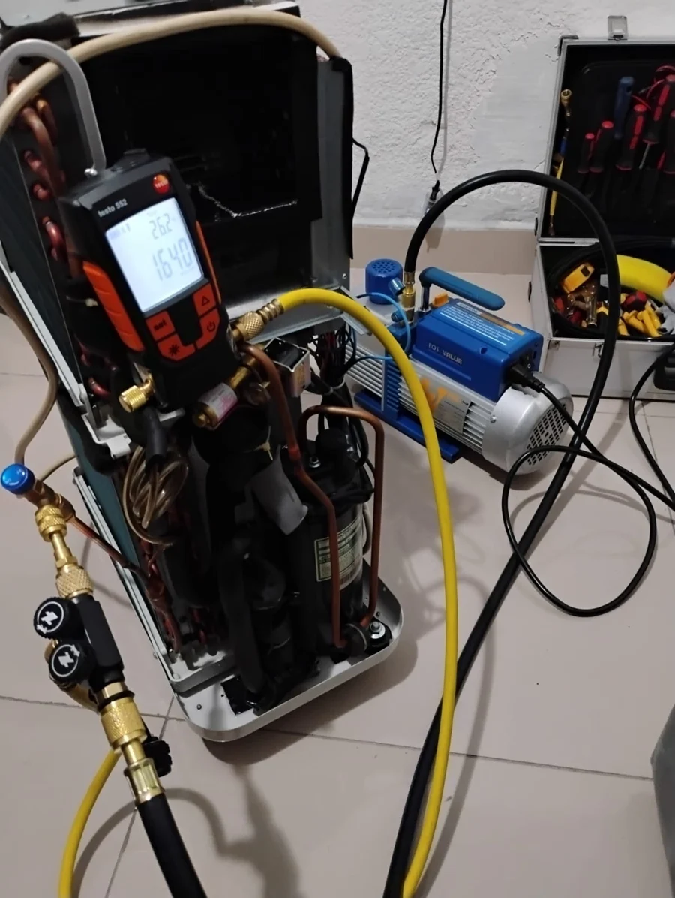
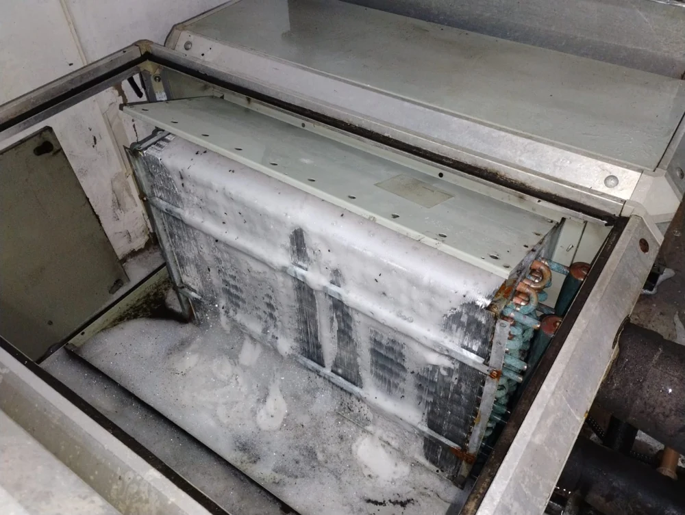
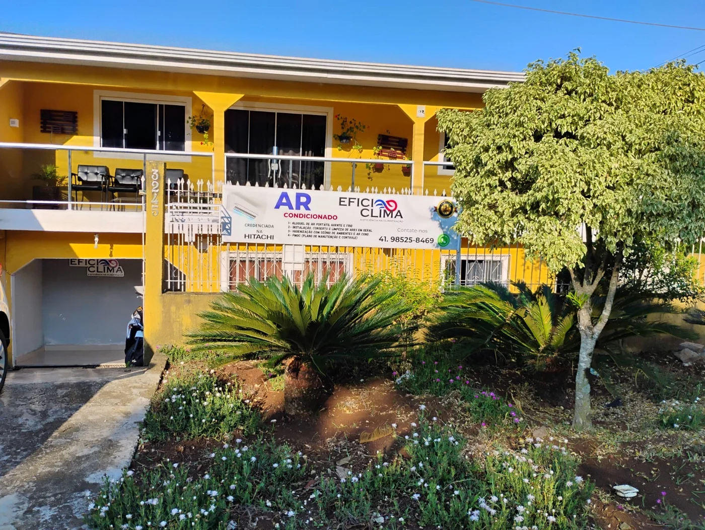

Philco portátil quente e frio
R$ 2.200
em até 6x sem juros · 11.000 BTUs · 110V
- 12 meses de garantia
- Frete e instalação inclusos
- Workshop e orientações de uso
Conforto em todas as estações, com soluções práticas, econômicas e sem complicação. Para residências, empresas e hospitais.
Compre, alugue por um período ou assine. Em todos, a gente entrega, instala e ensina a usar.

O portátil resfria o ambiente e funciona em 110V. Fácil de usar e de levar de um cômodo para outro.




Sim. O modelo Philco é quente e frio e utiliza tecnologia de bomba de calor.
O equipamento pode funcionar com o tampão, sem dreno. Quando a bandeja atingir o limite, o aparelho emite um alarme e basta realizar o escoamento para voltar a utilizá-lo.
110V.
Estão inclusos na compra do portátil Philco e nos planos de assinatura.
Sim, em até 6x sem juros.
Não. A higienização é feita no local, sem bagunça, em cerca de uma hora.
Apresentamos um orçamento complementar antes de qualquer serviço. Após a aprovação e a chegada dos insumos, o reparo é feito em nova visita, com agendamento prioritário.
Sim. Em janelas basculantes ou de correr, vedamos com papel especial lavável. Também instalamos a descarga do ar quente em portas.
Envie uma foto e a queixa. Respondemos pelo WhatsApp.